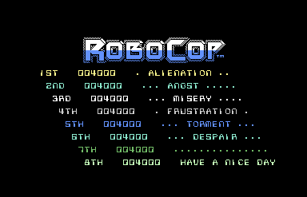
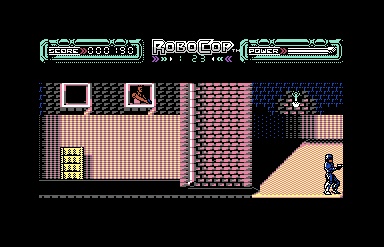

<meta charset="utf-8">
<meta name="viewport" content="width=device-width, initial-scale=1">
<title>RoboCop</title>
<link rel="preconnect" href="https://fonts.googleapis.com">
<link rel="stylesheet" href="https://fonts.googleapis.com/css2?family=Lato:wght@400;700;900&family=IBM+Plex+Mono:wght@400;500&display=swap">
<style>
:root{
  --bg:#23262d; --paper:#e9e7e1; --surface:#ffffff; --surface-2:#f1efea; --line:#d5d3cc; --line-soft:#e0ded8;
  --ink:#2f3136; --ink-soft:#55585f; --ink-mute:#80838a;
  --link:#1f5fa8; --link-hover:#154480; --accent:#1f5fa8;
  --amber:#c25a00; --cyan:#1f5fa8; --coral:#d04a3a; --green:#2a8a4a; --violet:#4a5bd6; --hl:#fff0c2;
  --chip:#2f3136; --chip-ink:#ffffff;
  --c64blue:#40318d; --c64grey:#686868;
  --fd:'Lato',system-ui,sans-serif; --fb:'Lato',system-ui,sans-serif; --fm:'IBM Plex Mono',ui-monospace,Menlo,monospace;
  --col:1080px; --gx:68px; --fs:17px; --lh:1.6; --hw:900; --h1:46px; --h2:26px; --sy:48px; --pp:26px; --r:10px;
  --plate-shadow:0 1px 2px rgba(0,0,0,.05),0 4px 14px rgba(0,0,0,.05);
}
*{box-sizing:border-box}
html{background:var(--bg);min-height:100%}
body{background:var(--paper);color:var(--ink);font-family:var(--fb);font-size:var(--fs);line-height:var(--lh);max-width:var(--col);margin:0 auto;min-height:100vh;padding:0 0 4rem}
h1,h2,h3{font-weight:var(--hw);letter-spacing:-.01em;text-wrap:balance;color:var(--ink);margin:0}
.wrap{padding:0 var(--gx)}
.hero{padding:48px var(--gx) 8px;text-align:left}
.eyebrow{font-family:var(--fm);font-size:12px;letter-spacing:.08em;text-transform:uppercase;color:var(--ink-mute);margin:0 0 10px}
.hero h1{font-size:var(--h1);line-height:1.15;letter-spacing:-.02em;margin:0 0 14px}
.hero .sub{margin:0 0 .6em;color:var(--ink-soft)}
section{padding:var(--sy) 0 24px}
section:last-of-type{border-bottom:none}
.fig{font-family:var(--fm);font-size:12px;letter-spacing:.08em;text-transform:uppercase;color:var(--ink-mute);margin:0 0 10px}
h2.t{font-size:var(--h2);margin-bottom:12px}
.lede{color:var(--ink-soft);margin:0 0 30px}
.plate{background:var(--surface);border:1px solid var(--line);border-radius:var(--r);padding:var(--pp);box-shadow:var(--plate-shadow)}
.cap{font-size:14px;color:var(--ink-mute);margin-top:14px;line-height:1.55}
.cap b{color:var(--ink);font-weight:700}
code{font-family:var(--fm);font-size:.82em;background:var(--chip);color:var(--chip-ink);border-radius:4px;padding:2px 6px;overflow-wrap:break-word;-webkit-box-decoration-break:clone;box-decoration-break:clone}

.ft-grid{display:grid;gap:6px}
.ft-grid button{padding:0;position:relative;line-height:0}
.ft-grid canvas{width:100%;image-rendering:pixelated;display:block}
.ft-tag{position:absolute;left:3px;top:3px;font:500 11px/1.3 var(--fm);background:rgba(255,255,255,.88);color:var(--ink);border-radius:3px;padding:1px 4px}
.ft-mark{position:absolute;right:3px;bottom:3px;font:500 10px/1.3 var(--fm);background:var(--chip);color:var(--chip-ink);border-radius:3px;padding:1px 4px}
.ft-big canvas{width:100%;max-width:768px;image-rendering:pixelated;display:block;margin:0 auto}
.ft-table{border-collapse:collapse;font-size:14px;width:100%}
.ft-table td,.ft-table th{border-bottom:1px solid var(--line-soft);padding:5px 8px;text-align:left;vertical-align:top}
.ft-two{display:grid;grid-template-columns:1fr 1fr;gap:16px;align-items:start}
.ft-four{display:grid;grid-template-columns:repeat(3,1fr);gap:12px;margin:0 0 20px}
.ft-four .plate,.ft-two .plate{margin:0;padding:12px}
.ft-shot,.ft-px{width:100%;height:auto;image-rendering:pixelated;display:block}
.ft-wide{max-width:960px;margin:0 auto}
.plate{margin:0 0 22px}
.ft-scroll{overflow-x:auto}
.ft-lab{display:block;font-family:var(--fm);font-size:13px;color:var(--ink-soft);margin:6px 0}
.ft-range{width:100%;max-width:520px;display:block}
.ft-controls{display:grid;grid-template-columns:repeat(3,1fr);gap:14px;margin:12px 0 0}
.ft-read{font-family:var(--fm);font-size:14px;background:var(--surface-2);border-radius:6px;padding:10px 12px;margin:12px 0 0}
.ft-bar-out{height:12px;background:var(--surface-2);border:1px solid var(--line);border-radius:6px;overflow:hidden;margin:10px 0 0;max-width:520px}
.ft-bar-out div{height:100%;background:repeating-linear-gradient(45deg,var(--amber) 0 6px,#e08a3c 6px 12px)}
.ft-meter{position:relative;width:110px;height:18px;background:var(--surface-2);border:1px solid var(--line);border-radius:4px;overflow:hidden}
.ft-meter span{position:absolute;left:0;top:0;bottom:0;background:var(--cyan);opacity:.35}
.ft-meter b{position:relative;font:500 12px/18px var(--fm);padding-left:6px}
.ft-objs{white-space:nowrap}
.ft-obj{display:inline-flex;flex-direction:column;align-items:center;margin:0 3px 0 0;padding:2px;background:#222;border-radius:4px;vertical-align:top}
.ft-obj i{font:500 10px/1.2 var(--fm);color:#fff;font-style:normal}
.ft-swapped{outline:2px dashed var(--amber);outline-offset:-2px}
.ft-swapped i{text-decoration:line-through;text-decoration-color:var(--amber)}
.ft-table canvas{background:#222;border-radius:4px;image-rendering:pixelated}
.ft-dead{display:flex;flex-wrap:wrap;gap:6px;margin:12px 0 0}
.ft-dead button{font-size:12px;padding:4px 8px}
@media (max-width:760px){:root{--gx:16px;--h1:36px;--pp:14px}.ft-two,.ft-four,.ft-controls{grid-template-columns:1fr}}
sup.fn{font-size:.7em;line-height:0}
sup.fn a{text-decoration:none}
sup.fn + sup.fn::before{content:","}
.overview-shot{margin:22px 0}
.overview-shot img{width:100%;max-width:768px;height:auto;aspect-ratio:384/272;image-rendering:pixelated;display:block}
.overview-shot figcaption{font-size:14px;color:var(--ink-mute);margin-top:8px;max-width:768px}
</style>
<!-- tabs -->
<header class="hero">
  <p class="eyebrow">Commodore 64 · 1988 · Data East</p>
  <h1>RoboCop</h1>
  <p class="sub">Nine stages of Old Detroit in three loads from disk, from the streets to the boardroom of OCP. The disk analysed here is Data East's North American release of Ocean's conversion of the film.</p>
</header>
<main class="wrap" data-part="">

<section id="game">
  <h2 class="t">A police officer rebuilt as a machine</h2>
  <p>The game follows the 1987 film. Alex Murphy, a Detroit police officer, is killed by a gang and rebuilt by the company OCP as RoboCop, and sets out to find his killers. The player walks him through the city's streets, a drug factory, OCP's headquarters, and a steel mill. The last stage is the boardroom, where OCP's Dick Jones holds the company's president hostage.<sup class="fn"><a href="about.html#src-1" title="C64-Wiki, RoboCop">1</a></sup></p>
  <figure class="overview-shot"><figcaption>The title screen. It shows the <a href="discoveries.html#scores">high-score table</a> and the <a href="controls.html#title">sound setting</a>; fire starts stage one.</figcaption></figure>
  <p>There are no lives. RoboCop has a <a href="gameplay.html#power">power bar</a> that enemies, bullets, and collisions drain, and that <a href="gameplay.html#pickups">baby food</a> protects and fills again. Each stage has its own <a href="gameplay.html#clock">clock</a>, and the game ends when the power runs out or the clock reaches 0:00.</p>
  <p>Between the walking stages are three of another kind. On two <a href="gameplay.html#hostage">hostage stages</a> the joystick moves a crosshair and the player must shoot the gunman without hitting the hostage. On the <a href="gameplay.html#photofit">photofit</a> the player builds a face from six features to identify a suspect. All nine are on the <a href="levels.html">Maps</a> page.</p>
  <figure class="overview-shot"><figcaption>Stage one. The <a href="graphics.html#screen">status panel</a> at the top holds the score, the power bar, and the clock; the street <a href="graphics.html#scroll">scrolls</a> beneath it.</figcaption></figure>
</section>

<section id="makers">
  <h2 class="t">The people behind the game</h2>
  <p>Ocean Software made the Commodore 64 version and published it in 1988, one of many film licences it bought at the time. The disk analysed here is Data East's North American release. The title screen of this disk reads "COPYRIGHT DATA EAST 1988" and "LICENCED FROM OCEAN SOFTWARE".<sup class="fn"><a href="about.html#src-1" title="C64-Wiki, RoboCop">1</a></sup></p>
  <p>The same title screen credits three people. Jonathan Dunn wrote the music, Steve Thomson drew the graphics, and Johnny Meegan did "the rest". Dunn's name is also in the code: level one's <a href="music.html#music">music driver</a> carries the text "MUSIC DRIVER V1.1 ALL CODE &amp; MUSIC BY JONATHAN DUNN".</p>
  <p>The game was not a conversion of Data East's arcade machine. <i>Zzap!64</i>'s reviewer noted that Ocean "weren't going to convert the arcade game directly", and that the decision paid off.<sup class="fn"><a href="about.html#src-2" title="Zzap!64 47">2</a></sup></p>
</section>

<section id="reception">
  <h2 class="t">"Grrrreat", apart from the sound</h2>
  <p><i>Zzap!64</i> reviewed the Commodore 64 version in issue 47, in March 1989. It gave 81 per cent for graphics, 91 for hookability, and 88 for lastability, and 89 per cent overall.<sup class="fn"><a href="about.html#src-2" title="Zzap!64 47">2</a></sup><sup class="fn"><a href="about.html#src-1" title="C64-Wiki, RoboCop">1</a></sup> One reviewer called the game "grrrreat" and the main sprite "very metallic", but found the backgrounds disappointing. The sound scored 73 per cent, for "weedy in-game music and effects".</p>
  <p><i>Commodore User</i> 64, in January 1989, gave 79 per cent.<sup class="fn"><a href="about.html#src-3" title="Commodore User 64">3</a></sup><sup class="fn"><a href="about.html#src-1" title="C64-Wiki, RoboCop">1</a></sup> Its reviewer found RoboCop "amazingly well animated, especially when he climbs steps", but called the effects "flat and dull". The one good thing about the sound, the review said, was the <a href="music.html#speech">speech</a> at the start. It also complained that lining RoboCop up at the top of a <a href="gameplay.html#stairs">flight of stairs</a> took too long.</p>
  <p><i>Your Commodore</i> gave 9 out of 10 in October 1990, <i>Power Play</i> and <i>The Games Machine</i> 77 per cent.<sup class="fn"><a href="about.html#src-1" title="C64-Wiki, RoboCop">1</a></sup></p>
</section>

<section id="explore">
  <h2 class="t">What the reviewers did not see</h2>
  <p>Two words typed on the title screens skip a level: <a href="discoveries.html#words">SUEDEHEAD and DISAPPOINTED</a>. The high-score table the game ships with reads <a href="discoveries.html#scores">ALIENATION, ANGST, MISERY</a>, and so on. In level three a bug makes <a href="discoveries.html#fire-bug">every enemy fire</a> when the first one is low enough on the screen. The second disk image of the same release cannot draw <a href="discoveries.html#disk-b">stage seven</a>.</p>
  <p><a href="levels.html">See all nine stages</a>, <a href="music.html">listen to the five tunes and fourteen effects</a>, or <a href="gameplay.html#clock">find out why a second on the clock is shorter than a second</a>.</p>
</section>
</main>

<footer style="margin:16px 0 0;padding:22px var(--gx) 0;border-top:1px solid #e0ded8;font-family:'IBM Plex Mono',ui-monospace,Menlo,monospace;font-size:12px;color:#80838a"><a href="https://github.com/gamesexplained/gamesexplained" style="color:#1f5fa8;text-decoration:none">GitHub</a> · <a href="https://discord.gg/3V9GWyRDWV" style="color:#1f5fa8;text-decoration:none">Discord</a><br>© Games Explained contributors. Write-ups, facts and symbol maps are available under <a href="https://creativecommons.org/licenses/by-sa/4.0/" style="color:#1f5fa8;text-decoration:none">CC BY-SA 4.0</a>; code under <a href="https://opensource.org/licenses/MIT" style="color:#1f5fa8;text-decoration:none">MIT</a></footer>
